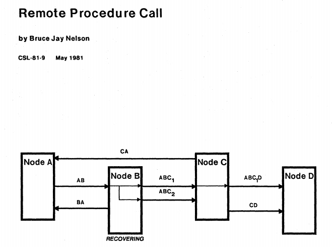

- 00 _导读 _ 什么是“The Fenix Project”？.md
- 00 开篇词 _ 如何构建一个可靠的分布式系统？.md
- 01 _ 原始分布式时代：Unix设计哲学下的服务探索.md
- 02 _ 单体系统时代：应用最广泛的架构风格.md
- 03 _ SOA时代：成功理论与失败实践.md
- 04 _ 微服务时代：SOA的革命者.md
- 05 _ 后微服务时代：跨越软件与硬件之间的界限.md
- 06 _ 无服务时代：“不分布式”云端系统的起点.md
- 07 _ 远程服务调用（上）：从本地方法到远程方法的桥梁.md
- 08 _ 远程服务调用（下）：如何选择适合自己的RPC框架？.md
- 09 _ RESTful服务（上）：从面向过程编程到面向资源编程.md
- 10 _ RESTful服务（下）：如何评价服务是否RESTful？.md
- 11 _ 本地事务如何实现原子性和持久性？.md
- 12 _ 本地事务如何实现隔离性？.md
- 13 _ 全局事务和共享事务是如何实现的？.md
- 14 _ 分布式事务之可靠消息队列.md
- 15 _ 分布式事务之TCC与SAGA.md
- 16 _ 域名解析系统，优化HTTP性能的第一步.md
- 17 _ 客户端缓存是如何帮助服务器分担流量的？.md
- 18 _ 传输链路，优化HTTP传输速度的小技巧.md
- 19 _ 如何利用内容分发网络来提高网络性能？.md
- 20 _ 常见的四层负载均衡的工作模式是怎样的？.md
- 21 _ 服务端缓存的三种属性.md
- 22 _ 分布式缓存如何与本地缓存配合，提高系统性能？.md
- 23 _ 认证：系统如何正确分辨操作用户的真实身份？.md
- 24 _ 授权（上）：系统如何确保授权的过程可靠？.md
- 25 _ 授权（下）：系统如何确保授权的结果可控？.md
- 26 _ 凭证：系统如何保证与用户之间的承诺是准确完整且不可抵赖的？.md
- 27 _ 保密：系统如何保证敏感数据无法被内外部人员窃取滥用？.md
- 28 _ 传输（上）：传输安全的基础，摘要、加密与签名.md
- 29 _ 传输（下）：数字证书与传输安全层.md
- 30 _ 验证：系统如何确保提交给服务的数据是安全的？.md
- 31 _ 分布式共识（上）：想用好分布式框架，先学会Paxos算法吧.md
- 32 _ 分布式共识（下）：Multi Paxos、Raft与Gossip，分布式领域的基石.md
- 33 _ 服务发现如何做到持续维护服务地址在动态运维中的时效性？.md
- 34 _ 路由凭什么作为微服务网关的基础职能？.md
- 35 _ 如何在客户端实现服务的负载均衡？.md
- 36 _ 面对程序故障，我们该做些什么？.md
- 37 _ 要实现某种容错策略，我们该怎么做？.md
- 38 _ 限流的目标与模式.md
- 39 _ 如何构建零信任网络安全？.md
- 40 _ 如何实现零信任网络下安全的服务访问？.md
- 41 _ 分布式架构中的可观测到底说的是什么？.md
- 42 _ 分析日志真的没那么简单.md
- 43 _ 一个完整的分布式追踪系统是什么样子的？.md
- 44 _ 聚合度量能给我们解决什么问题？.md
- 45 _ 模块导学：从微服务到云原生.md
- 46 _ 容器的崛起（上）：文件、访问、资源的隔离.md
- 47 _ 容器的崛起（下）：系统、应用、集群的封装.md
- 48 _ 以容器构建系统（上）：隔离与协作.md
- 49 _ 以容器构建系统（下）：韧性与弹性.md
- 50 _ 应用为中心的封装（上）：Kustomize与Helm.md
- 51 _ 应用为中心的封装（下）：Operator与OAM.md
- 52 _ Linux网络虚拟化（上）：信息是如何通过网络传输被另一个程序接收到的？.md
- 53 _ Linux网络虚拟化（下）：Docker所提供的容器通讯方案有哪些？.md
- 54 _ 容器网络与生态：与CNM竞争过后的CNI下的网络插件生态.md
- 55 _ 谈谈Kubernetes的存储设计理念.md
- 56 _ Kubernetes存储扩展架构：一个真实的存储系统如何接入或移除新存储设备？.md
- 57 _ Kubernetes存储生态系统：几种有代表性的CSI存储插件的实现.md
- 58 _ Kubernetes的资源模型与调度器设计.md
- 59 _ 透明通讯的涅槃（上）：通讯的成本.md
- 60 _ 透明通讯的涅槃（下）：控制平面与数据平面.md
- 61 _ 服务网格与生态：聊聊服务网格的两项标准规范.md
- 63 _ 基于Spring Boot的单体架构.md
- 64 _ 基于Spring Cloud的微服务架构.md
- 65 _ 基于Kubernetes的微服务架构.md
- 66 _ 基于Istio的服务网格架构.md
- 67 _ 基于云计算的无服务架构.md
- 春节特别放送（上）_ 有的放矢，事半功倍.md
- 春节特别放送（下）_ 积累沉淀，知行合一.md
- 用户故事 _ 詹应达：持续成长，不惧未来.md
- 结束语 _ 程序员之路.md
- 结课测试 _ 一套习题，测出你的掌握程度.md
07 _ 远程服务调用（上）：从本地方法到远程方法的桥梁
你好，我是周志明。从今天这一讲开始，我们就进入了课程的第二个模块：架构师的视角。
“架构师”这个词，其实指向非常宽泛，你可以说做企业战略设计的是架构师，也可以说做业务流程分析的是架构师。而在这门课程中，我所针对的架构师视角，特指软件系统中技术模型的系统设计者。在这个模块当中，我会带你系统性地了解，在做架构设计的时候，架构师都应该思考哪些问题、可以选择哪些主流的解决方案和行业标准做法，以及这些主流方案都有什么优缺点、会给架构设计带来什么影响，等等。
理解了架构师的这些职责，你对“架构设计”这种听起来就很抽象的工作，是不是有个更具体的认识了？
从今天开始，我会花两讲的时间，和你一起学习“远程服务调用（Remote Procedure Call，RPC）”这个话题。我会尽可能地从根源到现状、从表现到本质，为你解释清楚RPC的一些常见的问题。
那今天，我们就先从“什么是RPC”开始，一起去学习“远程服务”这个构建分布式系统的最基本的前置条件，看看它是如何出现、如何发展的，以及当前业界的主流实现手段。
其实，RPC这个词儿在计算机科学中已经有超过40年的历史了，肯定不是一个新概念。但是直到今天，我们还是会在知乎等网站上，看到很多人提问“什么是RPC？”“如何评价某某RPC技术？”“RPC好还是REST好？”，仍然“每天”都有新的不同形状的RPC轮子被发明出来，仍然有层出不穷的文章，去比对Google gRPC、Facebook Thrift等各个厂家的RPC技术的优劣。
像计算机科学这种知识快速更迭的领域，一项40岁高龄的技术能有如此的关注度，可以说是相当稀罕的现象了。那为什么会出现这种现象呢？
我分析了其中的原因：一方面，可能是微服务风潮带来的热度；另一方面，也不得不承认，作为开发者，我们很多人对RPC本身可以解决什么问题、如何解决这些问题、为什么要这样解决，都或多或少存在些认知模糊的情况。
那接下来，我就给你详细解读一下，关于RPC的各种分歧和普遍的错误认知。
进程间通讯
尽管今天的大多数RPC技术已经不再追求“与本地方法调用一致”这个目标了，但不可否认的是，RPC出现的最初目的，就是为了让计算机能够跟调用本地方法一样，去调用远程方法。所以，我们先来看一下在本地方法调用的时候，都会发生些什么。
我们先通过下面这段Java风格的伪代码，来定义几个概念：
// 调用者（Caller） ： main()
// 被调用者（Callee） ： println()
// 调用点（Call Site） ： 发生方法调用的指令流位置
// 调用参数（Parameter） ： 由Caller传递给Callee的数据，即“hello world”
// 返回值（Retval） ： 由Callee传递给Caller的数据，如果方法正常完成，返回值是void，否则是对应的异常
public static void main(String[] args) {
System.out.println(“hello world”);
}
通过这段伪代码，你可以发现，在完全不考虑编译器优化的前提下，程序运行至调用println()这一行的时候，计算机（物理机或者虚拟机）会做以下这些事情：
- 传递方法参数：将字符串hello world的引用压栈。
- 确定方法版本：根据println()方法的签名，确定它的执行版本其实并不是一个简单的过程，不管是编译时的静态解析也好，还是运行时的动态分派也好，程序都必须根据某些语言规范中明确定义的原则，找到明确的被调用者Callee。这里的“明确”是指唯一的一个Callee，或者有严格优先级的多个Callee，比如不同的重载版本。我曾在《深入理解Java虚拟机》中用一整章介绍过这个过程。如果你感兴趣的话，可以去深入了解一下。
- 执行被调方法：从栈中获得Parameter，以此为输入，执行Callee内部的逻辑。
- 返回执行结果：将Callee的执行结果压栈，并将指令流恢复到Call Site处，继续向下执行。
接下来，我们就需要考虑一下，当println()方法不在当前进程的内存地址空间中，会出现什么问题。不难想到，此时至少面临两个直接的障碍：
- 第一个障碍，前面的第一步和第四步所做的传递参数、传回结果都依赖于栈内存的帮助，如果Caller与Callee分属不同的进程，就不会拥有相同的栈内存，那么在Caller进程的内存中将参数压栈，对于Callee进程的执行毫无意义。
- 第二个障碍，第二步的方法版本选择依赖于语言规则的定义，而如果Caller与Callee不是同一种语言实现的程序，方法版本选择就将是一项模糊的不可知行为。
所以为了简化，我们暂时忽略第二个障碍，假设Caller与Callee是使用同一种语言实现的，先来解决两个进程之间如何交换数据的问题，这件事情在计算机科学中被称为“进程间通讯”（Inter-Process Communication，IPC）。那么我们可以考虑的解决办法就有以下几种：
第一，管道（Pipe）或具名管道（Named Pipe）
管道其实类似于两个进程间的桥梁，用于进程间传递少量的字符流或字节流。普通管道可用于有亲缘关系进程间的通信（由一个进程启动的另外一个进程）；而具名管道摆脱了普通管道没有名字的限制，除了具有普通管道所具有的功能以外，它还允许无亲缘关系进程间的通信。
管道典型的应用就是命令行中的“ | ”操作符，比如说，命令“ps -ef | grep java” ，就是管道操作符“ | ”将ps命令的标准输出通过管道，连接到grep命令的标准输入上。
第二，信号（Signal）
信号是用来通知目标进程有某种事件发生的。除了用于进程间通信外，信号还可以被进程发送给进程自身。信号的典型应用是kill命令，比如“kill -9 pid”，意思就是由Shell进程向指定PID的进程发送SIGKILL信号。
第三，信号量（Semaphore）
信号量是用于两个进程之间同步协作的手段，相当于操作系统提供的一个特殊变量。我们可以在信号量上，进行wait()和notify()操作。
第四，消息队列（Message Queue）
前面所说的这三种方式，只适合传递少量信息，而POSIX标准中，有定义“消息队列”用于进程间通讯的方法。也就是说，进程可以向队列中添加消息，而被赋予读权限的进程则可以从队列中消费消息。消息队列就克服了信号承载信息量少、管道只能用于无格式字节流，以及缓冲区大小受限等缺点 ，但实时性相对受限。
第五，共享内存（Shared Memory）
允许多个进程可以访问同一块内存空间，这是效率最高的进程间通讯形式。进程的内存地址空间是独立隔离的，但操作系统提供了让进程主动创建、映射、分离、控制某一块内存的接口。由于内存是多进程共享的，所以往往会与其它通信机制，如信号量等结合使用，来达到进程间的同步及互斥。
第六，本地套接字接口（IPC Socket）
消息队列和共享内存这两种方式，只适合单机多进程间的通讯。而套接字接口，是更为普适的进程间通信机制，可用于不同机器之间的进程通信。
套接字（Socket）起初是由Unix系统的BSD分支开发出来的，但现在已经移植到所有的Unix和Linux系统上了。基于效率考虑，当仅限于本机进程间通讯的时候，套接字接口是被优化过的，不会经过网络协议栈，不需要打包拆包、计算校验和、维护序号和应答等操作，只是简单地将应用层数据从一个进程拷贝到另一个进程，这种进程间通讯方式有个专有的名称：Unix Domain Socket，又叫做IPC Socket。
通信的成本
我之所以花这么多篇幅来介绍IPC的手段，是因为计算机科学家们最初的想法，就是将RPC作为IPC的一种特例来看待（其实现在分类上这么说也仍然合适，只是在具体操作手段上不会这么做了）。
这里，我们需要特别关注的是最后一种基于套接字接口的通讯方式（IPC Socket）。因为它不仅适用于本地相同机器的不同进程间通讯，而且因为Socket是网络栈的统一接口，它也理所当然地能支持基于网络的跨机器、跨进程的通讯。比如Linux系统的图形化界面中，X Window服务器和GUI程序之间的交互，就是由这套机制来实现的。
此外，这样做还有一个看起来无比诱人的好处。因为IPC Socket是操作系统提供的标准接口，所以它完全有可能把远程方法调用的通讯细节，隐藏在操作系统底层，从应用层面上来看，可以做到远程调用与本地方法调用几乎完全一致。
事实上，在原始分布式时代的初期确实是奔着这个目标去做的，但这种透明的调用形式反而让程序员们误以为通信是无成本的，从而被滥用，以至于显著降低了分布式系统的性能。
1987年，当“透明的RPC调用”一度成为主流范式的时候，安德鲁 · 塔能鲍姆（Andrew Tanenbaum）教授曾发表了一篇论文“A Critique of the Remote Procedure Call Paradigm”，对这种透明的RPC范式提出了一系列质问：
- 两个进程通讯，谁作为服务端，谁作为客户端？
- 怎样进行异常处理？异常该如何让调用者获知？
- 服务端出现多线程竞争之后怎么办？
- 如何提高网络利用的效率，比如连接是否可被多个请求复用以减少开销？是否支持多播？
- 参数、返回值如何表示？应该有怎样的字节序？
- 如何保证网络的可靠性，比如调用期间某个链接忽然断开了怎么办？
- 服务端发送请求后，收不到回复该怎么办？
- ……
论文的中心观点是：把本地调用与远程调用当作一样的来处理，是犯了方向性的错误，把系统间的调用做成透明的，反而会增加程序员工作的复杂度。
此后几年，关于RPC应该如何发展、如何实现的论文层出不穷，有支持的也有反对，有冷静分析的也有狂热唾骂的，但历史逐渐证明了Andrew Tanenbaum的预言是正确的。
最终，1994年至1997年间，由ACM和Sun的院士Peter Deutsch、套接字接口发明者Bill Joy、Java之父James Gosling等众多在Sun Microsystems工作的大佬们，共同总结了通过网络进行分布式运算的八宗罪（8 Fallacies of Distributed Computing）：
- 网络是可靠的（The network is reliable）
- 延迟是不存在的（Latency is zero ）
- 带宽是无限的（Bandwidth is infinite）
- 网络是安全的（The network is secure）
- 拓扑结构是一成不变的（Topology doesn’t change）
- 总会有一个管理员（There is one administrator）
- 不考虑传输成本（Transport cost is zero）
- 网络是同质化的（The network is homogeneous）
这八宗罪，被认为是程序员在网络编程中经常忽略的八大问题，潜台词就是如果远程服务调用要弄透明化的话，就必须为这些罪过买单。这算是给RPC能否等同于IPC来实现，暂时定下了一个具有公信力的结论。
到这时为止，RPC应该是一种高层次的，或者说语言层次的特征，而不是像IPC那样，是低层次的，或者说系统层次的特征，就成为了工业界、学术界的主流观点。
在1980年代初期，传奇的施乐Palo Alto研究中心，发布了基于Cedar语言的RPC框架Lupine，并实现了世界上第一个基于RPC的商业应用Courier。这里施乐PARC定义的“远程服务调用”的概念，就是符合上面针对RPC的结论的。所以，尽管此前已经有用其他名词指代RPC的操作，我们也一般认为RPC的概念，最早是由施乐公司所提出的。
首次提出远程服务调用的定义- Remote procedure call is the synchronous language-level transfer of control between programs in address spaces whose primary communication is a narrow channel.- —— Bruce Jay Nelson，Remote Procedure Call，Xerox PARC，1981

到这里，我们就可以得出RPC的定义了：RPC是一种语言级别的通讯协议，它允许运行于一台计算机上的程序以某种管道作为通讯媒介（即某种传输协议的网络），去调用另外一个地址空间（通常为网络上的另外一台计算机）。
小结
这一讲，我们讨论了RPC的起源、概念，以及它发展上的一些分歧。以此为基础，我们才能更好地理解后面几讲要学习的内容，包括RPC本身要解决的三大问题、RPC框架的现状与发展，以及它与REST的区别。
RPC以模拟进程间方法调用为起点，许多思想和概念都借鉴的是IPC，因此这一讲我也介绍了IPC中的一些关键概念和实现方法。但是，RPC原本想照着IPC的发展思路，却在实现层面上遇到了很大的困难。RPC作为一种跨网络的通讯手段，能否无视通讯的成本去迁就编程和设计的原则，这一点从几十年前的DCE开始，直到今天学术界、工业界都还有争议。
在下一讲，我会和你一起学习在RPC的定义提出之后，工业界中出现过的、著名的RPC协议，以及当今常用的各种RPC框架，学习它们的共性，也就是它们都必须解决哪几个问题，各自以什么为关注点，以及为何不会出现“完美的”RPC框架。
一课一思
“远程方法不应该无视通讯成本”这个观点，从性能的角度来看是有益的，但从简单的角度看则是有害的。在现代的软件系统开发中，你用过什么RPC框架吗？它们有没有把“像本地方法一样调用远程方法”作为卖点？
欢迎在留言区分享你的答案。如果你觉得有收获，也欢迎你把今天的内容分享给更多的朋友。
好，感谢你的阅读，我们下一讲再见。
© 2019 - 2023 Liangliang Lee. Powered by gin and hexo-theme-book.